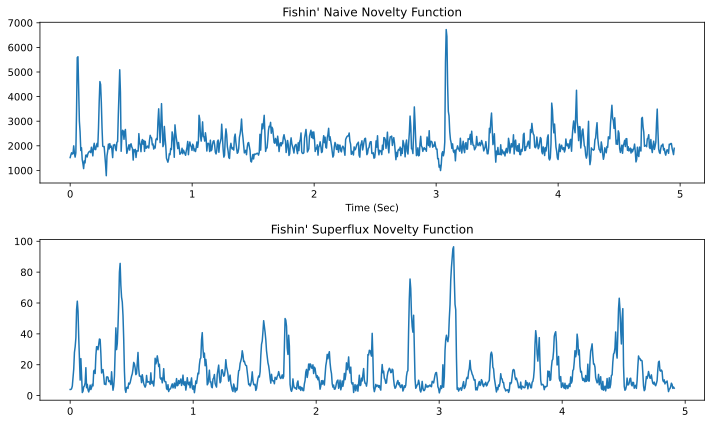
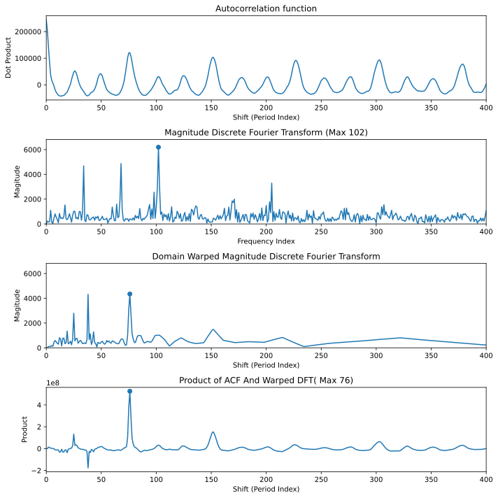
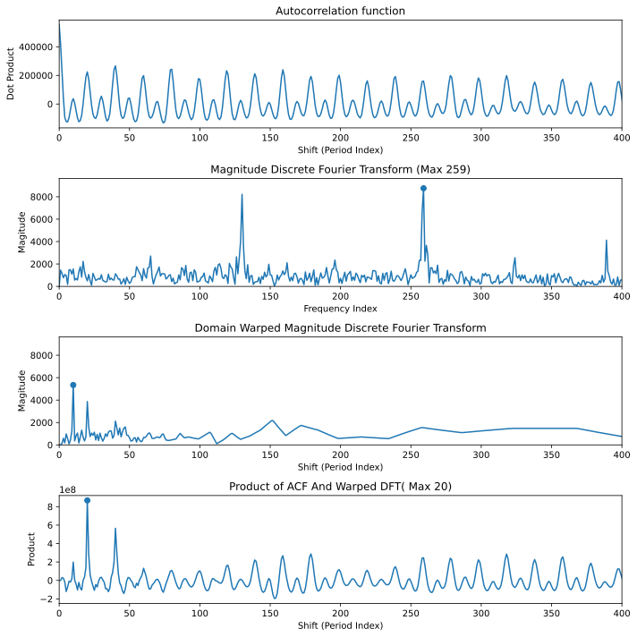
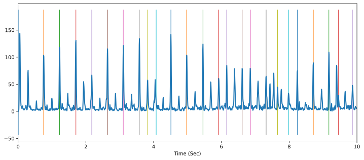
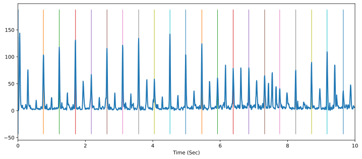
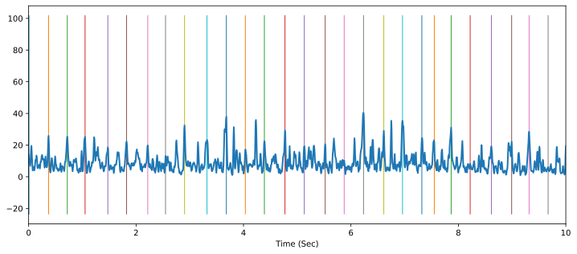
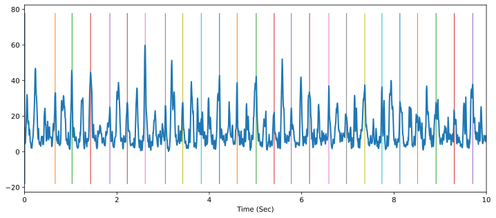

Assignment 4: Tempo Estimation And Beat Tracking (50 Points)
Chris Tralie
Overview / Logistics
We are now moving into the analysis part of the course. You will use mid-level features built on top of spectrograms both to estimate the overall tempo of a clip of audio, as well as getting the computer to "tap its virtual foot" to the beat. Both the tempo and beat locations are aspects of rhythm.
Learning Objectives
- Practice numpy arrays, methods, and for loops in the service of musical applications
- Built audio novelty features on top of spectrograms and mel-spectrograms
- Use autocorrelation and the DFT to estimate tempo
- Implement a dynamic programming technique for beat tracking
What To Submit
When you are finished, submit your python filed novfn.py, tempo.py, and beat.py to Canvas.
Programming Tasks
Click here to download the starter code for this assignment. This code includes two testing suites for tempo estimation and beat tracking from MIREX. Below are the imports you will need to test your code in jupyter:
Part 1a: Superflux Audio Novelty Functions (8 Points)
There is a whole zoo of possible ways of computing audio novelty functions that pick up on rhythmic events. For example, even all the way back in 2007, the authors of this paper experimented with 172 unique such novelty functions! In this section, we will explore a more recent method known as superflux for generating superior audio functions to the versions we described in module 16. This technique is described in detail in this paper from 2013, but we will summarize the key steps below. Before we do that, though, let's look at an example of how superflux compares to the naive technique. Consider the following audio clip, obtained from the librosa gallery.
Then, once you've implemented superflux by filling in the method get_superflux_novfn, the following code will run.
And produce the figure below:

As you can see, the peaks in the audio novelty function are better and more clearly separated from the background noise. We can also hear the difference between the two if we apply the provided sonification method that shapes noise, as explained in module 16
Notice how much clearer the rhythmic events sound in the superflux version
Your Task: Superflux Algorithm Steps
Fill in the method get_superflux_novfn in the file novfn.py to implement the superflux pipeline, performing the following steps in sequence:
- Compute the absolute magnitude spectrogram (this has been provided for you)
- Convert the spectrogram to a mel spectrogram. As described in Section 2.1 of the superflux paper, the mel filterbank should contain 138 bins spanning frequencies from 27.5 hz to 16000hz.
- Convert every element of the magnitude Mel-spectrogram MS to a log magnitude scale by applying the equation log10(MS + Gamma), where Gamma is a provided parameter (set to 1 in the superflux paper, as shown in equation 4 on page 3).
-
Perform a maximum filter; that is, replace every amplitude in every window by the maximum of the amplitudes of a window of length
max_winaround them. You can use scipy'smaximum_filtermethod, which has already been imported asmaximum_filter, to do this in one line. The shape of the filter should be(max_win, 1), or, in other words, a vertical window ofmax_win in size. -
Take the sum of positive differences of amplitudes across all frequency bins from a window to a window in the future, similarly to the naive version (recall that in the positive difference, we don't add things to the sum that are negative, so this is not the same as the absolute value). However, the hop length in superflux is generally taken to be smaller than usual so the windows are sampled at a higher resolution, leading to a higher resolution audio novelty function. This means that adjacent windows change less. To compensate for this, instead of taking the difference in amplitudes for corresponding frequencies in adjacent windows, you should take differences with windows that are
muhops ahead in the future (as described in Section 2.1 of the superflux paper).Hint: Be sure to review module 16 video 0 and video 1 to recall how to do the positive difference step.
Part 1b Tempo Estimation
Now that we have clean audio novelty functions, we can estimate tempo from them with various techniques. To evaluate the results, we will compute tempo estimates with our code on the 20 examples in the tempo dataset. Provided with the tempo dataset are two tempos: a slow tempo and a fast tempo. We declare that our estimated tempo is correct if it is within 8% of either of these two "ground truth" tempos.
General Tip
I have provided code to test these methods on the dataset of 20 clips, but I would recommend just throwing some plots into jupyter as you incrementally develop these methods until you're confident you know what's going on. You don't even need to write code in tempo.py right away; just see if you can get an example to work in an notebook cell. Then, you can write a more general purpose method, and you can test and see if you get similar results.
Fourier-Based Tempo Estimation (7 Points)
Your Task
Fill in the method get_fourier_tempo to estimate the tempo, in beats per minute, of a tune based on its audio novelty function after subtracting its mean (this makes it so that bin 0, the average, is 0 and doesn't throw off the estimate).
Description
Since rhythm is repetitive in popular music genres, the audio novelty function should be periodic; i.e. the spacing between beats should be fairly consistent, up to some missing beats for syncopation and other effects. This means that the Discrete Fourier Transform should have peaks at frequencies corresponding to the tempo, and possibly its harmonics. Let's consider the superflux novelty function of train4.wav in the tempo dataset (a clip from "Green Eyes" by Erykah Badu), as obtained by the following code
If we plot the magnitudes of the first 400 frequency bins of the DFT, we see the following plot:

There are three peaks at the beginning, and we end up finding that the max occurs at the third such bin at frequency index 63. The sample rate is 44100 and the hop length is 256, which means we have (44100/256) samples of the audio novelty function per second. The audio clip is 30 seconds long, which translates into an interval of 5165 samples in the audio novelty function at this rate. We put this all together to find that the frequency is
\[ \left( \frac{63 \text{ cycles}}{5165 \text{ samples}} \right) \left( \frac{44100/256 \text{ samples}}{1 \text{ second}} \right) \left( \frac{60 \text{ seconds}}{1 \text{ minute}} \right) = 126 \text{ beats/minute} \]
Actually, if we look at the ground truth tempos in the dataset, we see that they are 42bpm and 126bpm. So we actually found the higher tempo here. This tune is counted in triplets, so the higher tempo is 3x the lower tempo. We also see the lower tempo show up as a peak at index 21, which is 1/3 of the index we chose, but it is not the max peak.
Hint
Be careful that you only consider the first half of the DFT! Since a DFT with N frequencies on N samples is redundant, the second half will be the mirror image of the first half. If you pick a frequency in the second half, you will get what appears to be a ridiculously high tempo, but this is actually just the mirror of a much lower tempo.
Results
Let's first run this technique using the vanilla audio novelty function on all 20 clips. As we see, we get only 6/20 to within 8% of at least one of the two ground truth tempos. However, we see that many of the ones that are marked wrong are harmonics of the true tempo. For instance, we report a tempo of 306 for train3, which is double the highest tempo. This is one of the downsides of using Fourier here; the impulsive beats have many harmonics in their Fourier representation, and we sometimes pick a harmonic instead of the true base frequency corresponding to the rhythm. We will try to address this with another technique later, but it is a problem that will plague any tempo estimator to some extent.
One thing we can change here is to use an improved audio novelty function. So let's swap in the superflux method we worked so hard for. We get 8/20 here, so better, but probably not a statistically significant improvement
DFT-ACF Tempo Estimation (10 Points)
Your Task
Fill in the method get_acf_dft_tempo in tempo.py to compute an improved tempo estimate, based on a combination of the autocorrelation function (aka ACF, as described in module 16) and the DFT .
Description
The algorithm is described in Section 3.1.1 of Peeters, 2007, but we will summarize the theory and the steps below.
As we discussed, one of the issues with using the DFT is that we sometimes pick harmonics of the true rhythm, since harmonics exist for any periodic signal that isn't a pure sinusoid. We could try the autocorrelation function (ACF), but, as it turns out, this has the opposite problem: subharmonics of tempo. The ACF takes a dot product between a signal and its shifts, so it will have a local max if the shift coincides with the period T. But this also means that it will have peaks at 2T, 3T, 4T, etc. Since the the period is inversely related to the frequency, these longer periods actually correspond to fractions of tempo.We can try to get the best of both worlds by multiplying DFT by the ACF at each possible tempo. The DFT should be small at subharmonics, while the ACF should be small at harmonics, so all but the true tempo should be damped down. The challenge here is that the ACF and DFT are expressed in different units. In particular
- The DFT is expressed as a frequency as a number of cycles over the extent of the audio novelty function.
- The ACF is expressed as a period in samples per cycle.
What this means is that we have to warp the domain of the DFT to coincide with the domain of the ACF. In this process, higher bins of the DFT should turn into lower bins of the ACF, since period and frequency are inversely related. Visually, this looks like taking the mirror image of the DFT and compressing it towards the origin. Mathematically, for an audio novelty function with N samples, a shift T in the ACF corresponds to frequency index N/T. So we want to create the warped dft, dftw, as the composition
\[ \text{dftw}[T] = \text{dft}[N/T] \]
But note that N/T may not be an integer, so to figure out what should go in warped DFT bin T, we should interpolate between the floor and the ceiling of N/T. We can do this using linear interpolation. Let i1 be int(np.floor(N/T)) and i2 be int(np.ceil(N/T)), then the linear interpolation is
\[ \text{dftw}[T] = \left( \frac{N}{T}-i1 \right)*\text{dft}[i2] + \left( i2-\frac{N}{T} \right)*\text{dft}[i1] \]
Example: train5.wav
The image below shows this on train5.wav in the tempo dataset. As you can see, the ACF (first plot) has many peaks at integer multiples of the first peak at index 76, while the DFT (second plot) has a peak at the first harmonic of its maximum at index 102. If we warp the DFT (third plot) by takings its mirror image and compressing it towards the origin, then it lines up with the ACF, and we can take the point by point product, which gives us the combined plot on the bottom with the harmonics and subharmonics cancelled out. We can now say confidently that the tempo occurs at a shift of 76 samples. This occurred at a hop length of 512 samples at a sample rate of 44100. The general equation for converting a shift idx into beats per minute (bpm) is:
\[ \left( \frac{1}{\text{idx}} \frac{\text{cycle}}{\text{shift}} \right) \left( \frac{1}{\text{hop}} \frac{\text{shift}}{\text{samples}} \right) \left( \text{sr} \frac{\text{samples}}{\text{sec}} \right) \left( 60 \frac{\text{sec}}{\text{minute}} \right) \]
Or, in other words, 60*sr / (idx*hop). For idx = 76, sr=44100, hop=512, this is 68 bpm, which is quite close to one of the ground truth tempos of 68.5 bpm.

Example: train14.wav
Below is another example on train14.wav in the tempo dataset. Here we really see the effect of damping down the subharmonics of the ACF

Results
Below are the results, which show a substantial improvement over everything we've seen so far, with a 10/20! Obviously, there is still room for improvement, but this is a surprisingly good agreement with human annotations given how little code we wrote, and most of the errors are "octave errors" where the tempo is a double or a half of one of the ground truth tempos.
Part 2: Beat Tracking
In this section, you will implement the dynamic programming beat tracking algorithm described at this link, editing code in the beat.py file.
NOTE: This method of tracking beats requires us to have an estimate of the tempo up front. Of course, we could use the methods from the last part to compute this before running beat tracking.
NOTE ALSO: If you're curious about other techniques for beat tracking in python, check out madmom.
Sonifying Beats (5 Pts)
As with all of our features, it's helpful to "sonify" what we have computed so we can hear its quality. So let's setup these tools before we even attempt to track the beats
Your Task
Fill in the method sonify_beats to create little blips that occur at beat locations. In particular, you should sonify each beat by adding in a small 440hz sinusoid at each beat location. Each blip should be added in to a slice of the array starting at the beat location and continuing for blip_len seconds. For example, if you run the following code to load one of the ground truth human annotators on the third train clip
then you should hear this
then you should hear this
Dynamic Programming Beat Tracking (20 Points)
Your Task
Fill in the method get_beats to perform dynamic programming beat tracking. You can use both the sonify_beats method, as well as the provided plot_beats method, to help check to make sure it's working well. For example, consider generating the following novelty function for the first example in the beats dataset
The tempo in this tune is 129.5 beats per minute. If we're slightly off on our tempo estimate and guess 120, and we're also very permissive with sticking to the tempo, we don't always get a consistent pulse, and we get subdivided beats at times

If, however, we increase the α penalty of tempo deviation from 1 to 100, the algorithm is less tempted to add beats on some of the high audio novelty function regions in subdivided places

Here's a slightly tougher example
And here are the results

Here's yet another example, where we really have to turn up α so that the algorithm is not tempted to take a few large peaks in novelty to stay on tempo (e.g. around 3 seconds and 5.5 seconds)
And here are the results
